Live Project
Cutting Salary Advance Requests From 6 Minutes To Under 2
“I can only take a loan on the web app. It's frustrating to always go to my browser whenever I want to apply for Salary Advance.” That was real QA feedback on Fundall, an all-in-one financial partner for individuals, SMEs, and corporates, and it's the sentence that shaped this project.
As part of Fundall's rebranding efforts post-acquisition, I was brought in to lead the design of a critical new feature: Loans & Salary Advance on the mobile app. My task was to take that feature from web-only and barely visible to a mobile flow users could find, trust, and complete in minutes.
Challenge
Primary Task
Design and integrate a Loan and Salary Advance feature into the existing Fundall app in a way that is highly visible and frictionless to use.
Secondary Task
Ensure the mobile app redesign reflects the new brand direction and product expansion.
Impact
See Outcome ↓My Design Process
I adopted a 4-step human-centered design process tailored to fintech products:
- 01 Empathize Gathered user insights from internal QA Slack feedback, PRD documentation, and direct interviews.
- 02 Define Identified user pain points and mapped core needs to functionality.
- 03 Ideate Created user personas, flows, and wireframes to propose solutions.
- 04 Prototype & Test Built and tested high-fidelity designs across iOS devices.
The design process brought a fresh outlook to how we approached problems, encouraging faster iteration, cross-team collaboration, and continuous feedback. It helped break down silos, align product goals, and ensure that every solution was both user-centered and business-driven.
User Research & Insights
To deeply understand the user's financial behavior, I used mixed methods:
Qualitative Data
Direct interviews and the web-only complaint quoted above, cross-checked against other users' feedback to confirm it wasn't a one-off.
Quantitative Data
Quantitative feedback from internal QA testing Slack channel.
Competitive Analysis
Competitive benchmarking against platforms like Fairmoney, Carbon, and Branch.
The resulting user research and insights created a shared understanding of user behaviors and pain points, informed design priorities across the merged products, and ensured that decisions were grounded in real user needs rather than assumptions.
Key Insights
- 01 Loan access was buried and not visible enough in the app.
- 02 Users needed real-time eligibility status and a repayment dashboard.
- 03 Investors and SME users had unique flows that weren't supported.
The One Decision
I chose to surface Loans & Salary Advance as a primary entry point on the home dashboard, rather than tuck it into a secondary menu the way the original web flow did. That was a harder call internally than it sounds, during a post-acquisition rebrand, the instinct is often to look conservative and "financially responsible" rather than put a loan button in front of every user on login. I made the case using the QA feedback directly: the friction wasn't that users didn't want the feature, it was that they couldn't find it. Hiding a feature people are already asking for doesn't read as caution, it reads as a support ticket waiting to happen.
Problem Statement(s)
- 01 How might we make loan and salary advance features more visible and accessible in the app?
- 02 How might we streamline the user journey from login to loan disbursement?
User Persona
“I'm passionate about building financial stability and owning valuable assets, especially with the rising inflation rates. However, I often find myself without enough funds at the right time to take advantage of opportunities, this is why access to salary advances or loans is important to me.”
, Chimamanda Adichie
Age
34
Location
Ibadan, Oyo
Marital Status
Divorced
Children
One
Accommodation
2 Bedroom Apartment
Occupation
Employed
Salary
₦150,000
Education
Master's
- IntrovertExtrovert
- AnalyticalCreative
- ImpulsiveLoyal
- MessyOrganized
About
Chimamanda is an investment enthusiast who likes finding ways to make residual income. And with investments, the more money you have in, the more potential return you can get. And since she is employed, she would like to leverage future income to provide for her future.
She likes traveling, cuisine hunting and also vlogging. She is a very sophisticated person.
Goals
- To be able to access more money than she can currently earn.
- To buy assets and keep till she is ready to sell.
Frustrations
- Doesn't want to miss out on an investment gem.
Opportunist, Enthusiast, Impulsive & Financially Capable
With this there was a unifying team understanding of target audiences, guided design decisions across both legacy and new products, and ensured the merged platform addressed real user needs with greater empathy and precision.
Information Architecture
This helped streamline navigation across the integrated products, reduced user friction, and enabled faster content discovery, ultimately enhancing overall usability and product coherence.
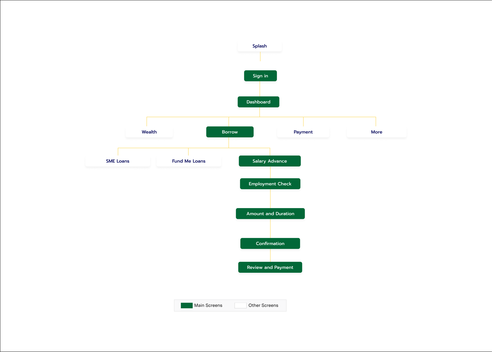
Design System
Due to the acquisition of Fundall, there was a need for a new design system. I collaborated with the teams to merge our existing UI patterns with those of the acquiring company, leading to the creation of a unified design system. This involved auditing both systems, identifying overlapping components, and standardizing visual and interaction patterns to ensure consistency across products. I contributed to defining foundational styles, building scalable components in Figma, and working closely with engineers to align design tokens with code. The resulting system improved design-developer collaboration, accelerated delivery timelines, and enabled a more cohesive user experience across the newly integrated product suite.
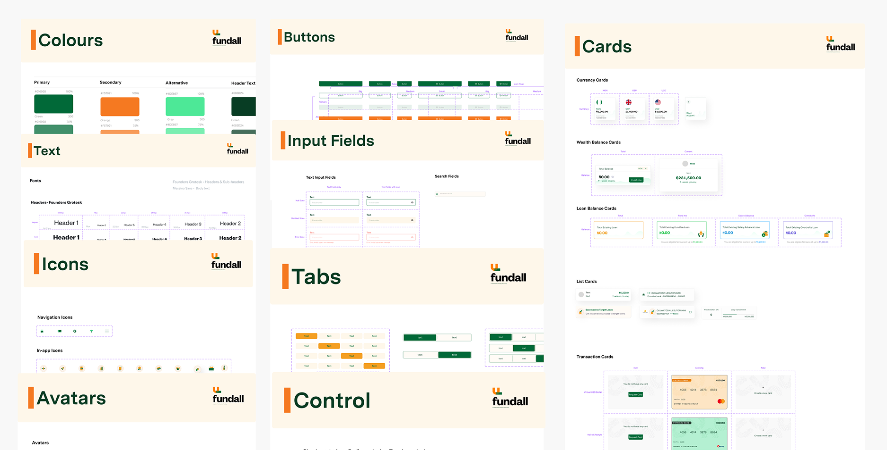
Leading Through The Merger
Scope
Led design on the one feature (Loans & Salary Advance) that had to work across two merging brands' worth of legacy assumptions, on a rebrand timeline neither team fully controlled.
Stakeholders
Ran the design-system audit jointly with the acquiring company's team, identifying which of two overlapping component sets to standardize on, not just adding a third.
Defending The Call
Pushed for prominent loan placement against the brand-caution instinct common after an acquisition, using direct QA feedback as the evidence rather than a design preference.
Handoff
Worked directly with engineers to align design tokens to code so the merged system didn't just look unified in Figma, it shipped unified.
Information Architecture · Wireframes
The wireframes served as a critical alignment tool, helping us validate ideas early, streamline stakeholder feedback, and bridge the gap between concept and execution, ultimately accelerating design decisions across the unified product experience.
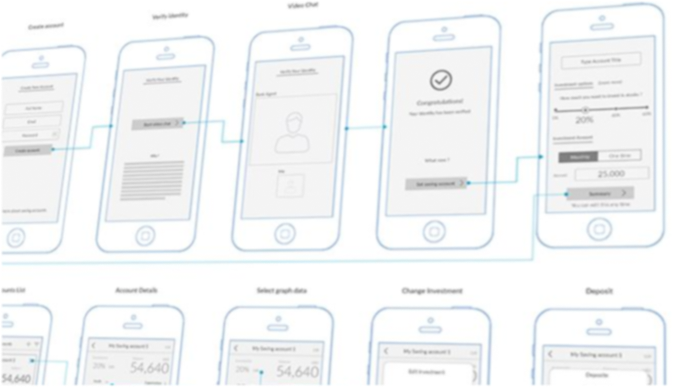
Screens
Sign-in Page
We simplified the login page. Users can enter directly with either their password, or opt for other options like passcode or biometrics.
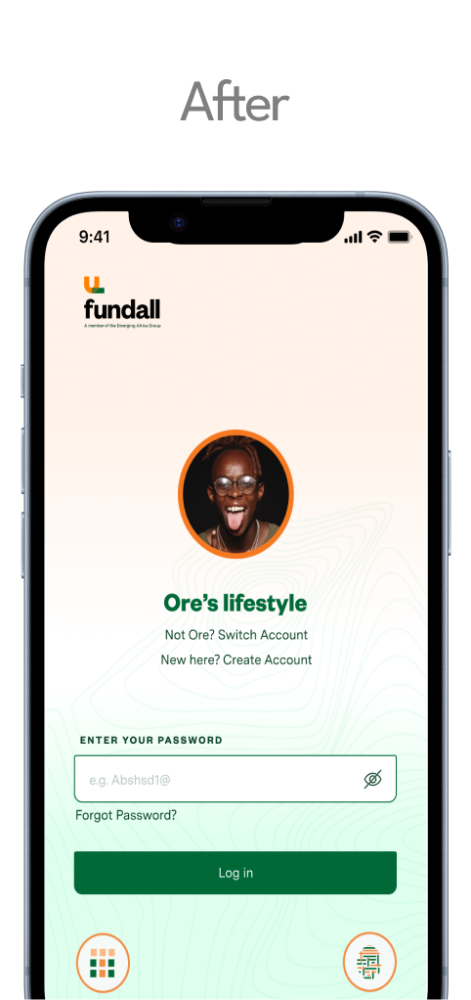
Home Page
We kept the same content as the original but made it more appealing to see, to allow distinction and easy access for the user, this should solve the clumsiness users were feeling from the earlier survey.
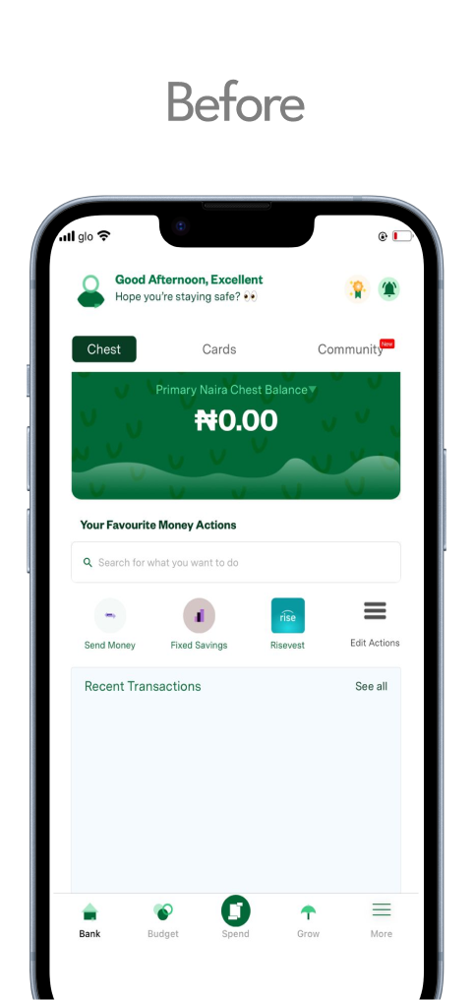
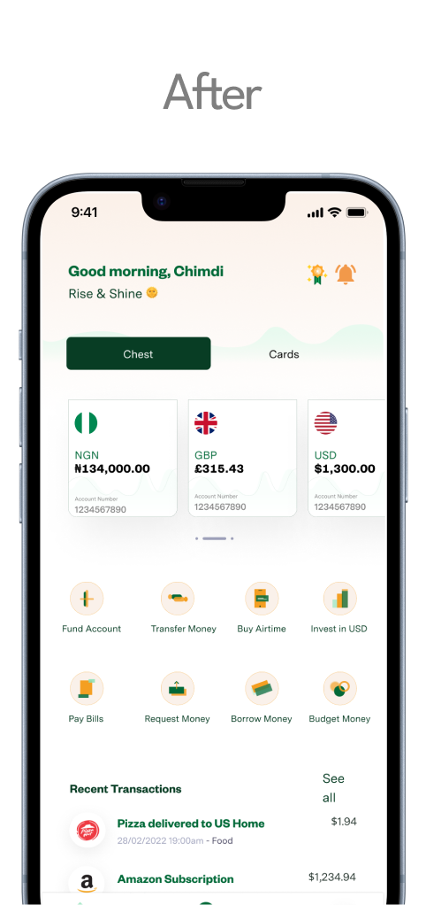
Borrow Page
We added a loans page to improve accessibility for users by making the loan option more obvious and easy to access, and included eligible amounts to help nudge them toward a decision.
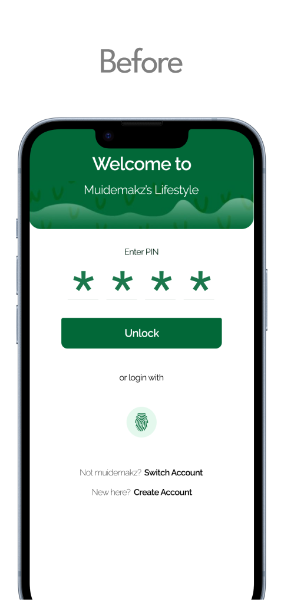
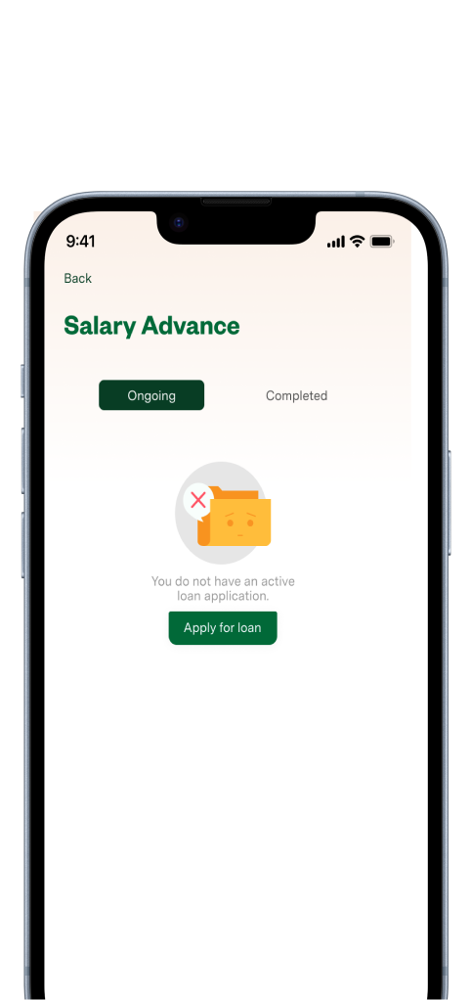
Salary Advance Onboarding
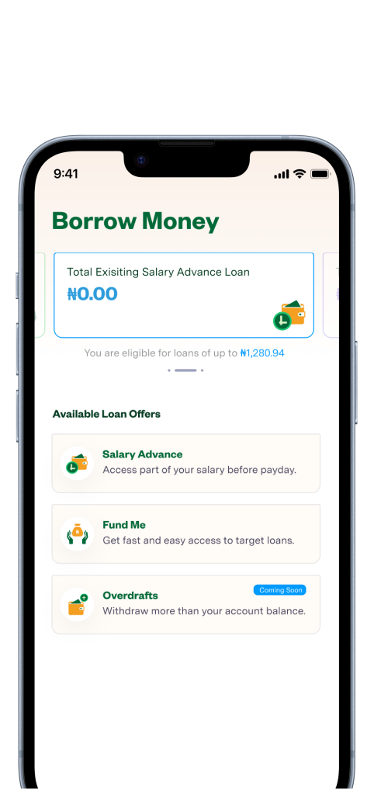
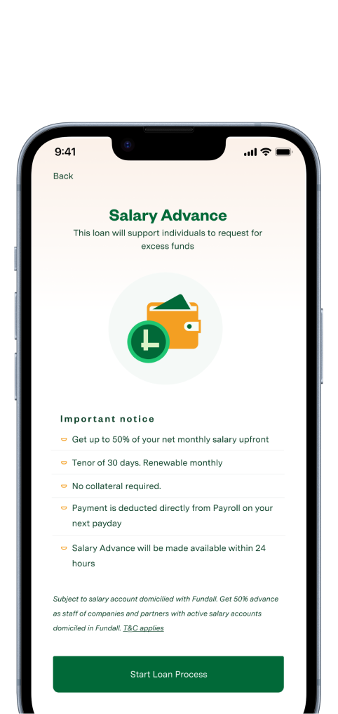
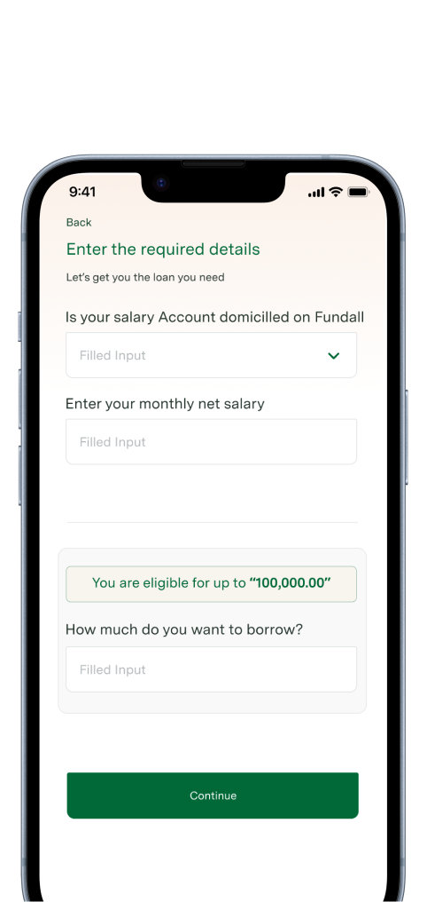
Salary Advance Page
Users have access to the Salary Advance option and, at a glance, their salary advance history. The empty state was designed to nudge them toward a decision.
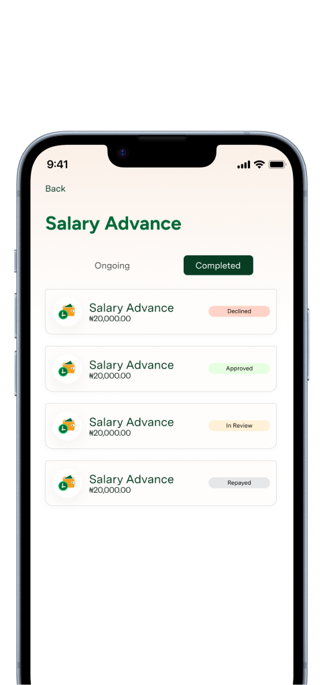
Salary Advance Application
The full application flow, from eligibility check through to confirmation, made the loan option more obvious and easy to access, with eligible amounts surfaced early to help users decide.
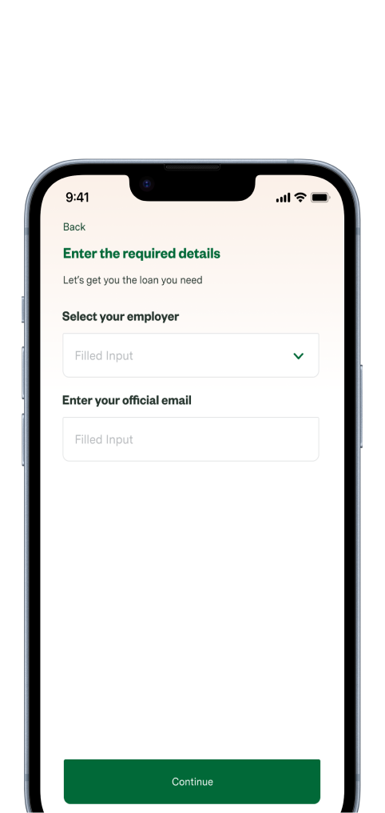
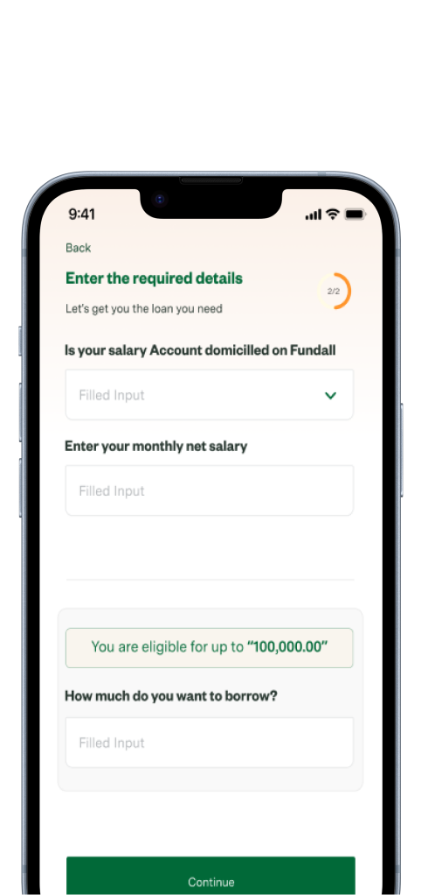
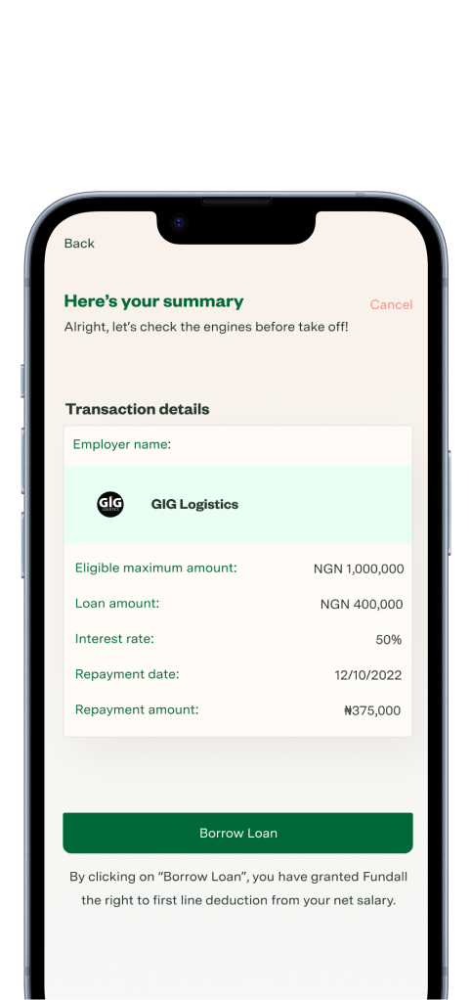
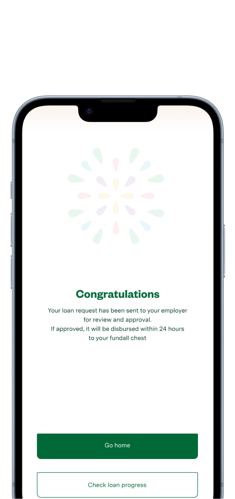
Other Screens
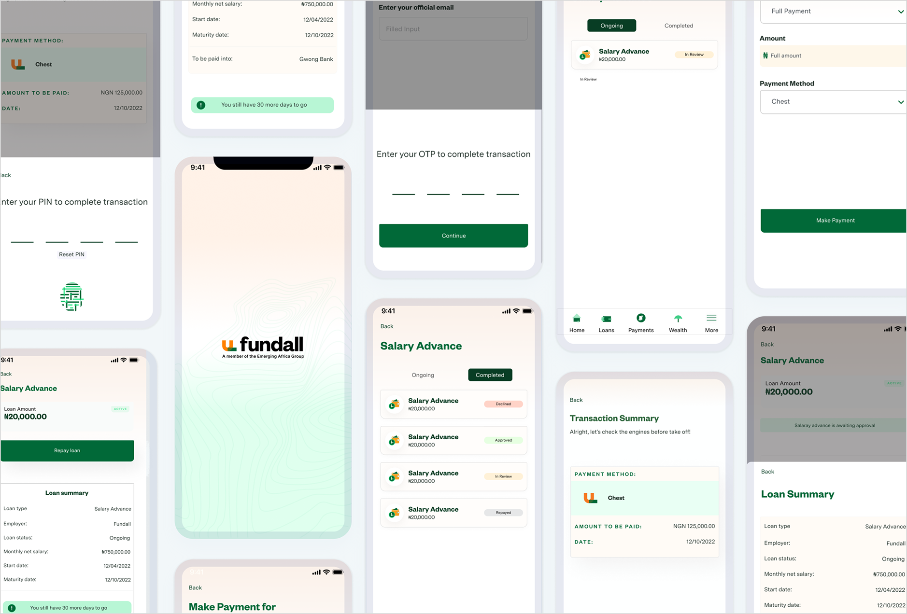
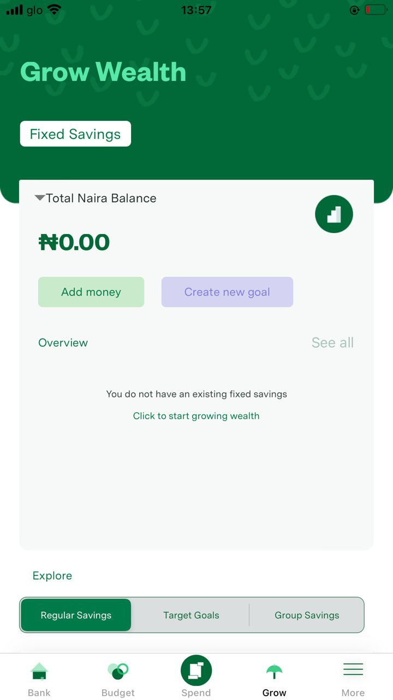
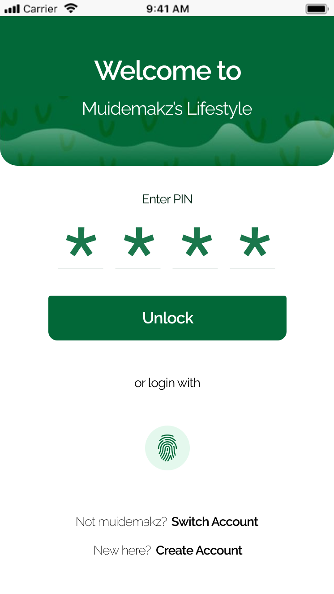
The high-fidelity designs brought clarity and realism to design concepts, enabling faster stakeholder buy-in, smoother developer handoffs, and more accurate user testing, ensuring that visual and functional details were aligned before full implementation.
Testing & Feedback
- 01 Users appreciated the speed and simplicity of the salary advance process, which reinforced trust and encouraged repeat usage.
- 02 Since the project was designed for iOS users only, we realized that some of the current interactions would not scale for Android.
- 03 While the feature works well, users need better visibility into the logic behind their salary advance limits to feel more in control and informed.
Continuous testing and feedback loops allowed us to identify usability issues early, validate design decisions with real users, and iterate quickly, ensuring the final product was both intuitive and aligned with user expectations.
Outcome & Impact
The redesign of the Salary Advance feature at Fundall led to measurable improvements in usability and adoption:
Adoption
28%
Increase in salary advance requests within the first quarter after launch.
Speed
6→2 min
Average time to request a salary advance, down from 6 minutes due to streamlined flows.
Clarity
-45%
Fewer form-completion errors, reducing support tickets related to the feature.
Trust
74%
Of customers felt more confident using the redesigned process, citing fee and repayment transparency.
What Would Prove This Wrong
The bet was that visibility, not appetite, was the blocker, that users already wanted the feature and just couldn't find it. If adoption hadn't moved after making it a primary dashboard entry point, that would have meant the QA complaints were about the web-only friction specifically, not discoverability in general, and the next fix would have been trust or eligibility clarity instead of placement.
Next Steps
While the redesign achieved strong results, there are areas where the feature can be further enhanced:

Onboarding
Improve onboarding for both new businesses and their employees to ensure faster adoption of the platform.
Personalization
Offer users customized salary advance limits based on their spending and repayment history.
Education
Integrate financial literacy prompts to help users understand the implications of frequent advances.
Automation
Build smarter repayment reminders and auto-debit options to reduce defaults.
Reporting
Enhance admin dashboards to give Fundall's team better oversight into usage patterns and risk profiles.
Lessons & Takeaways
Working on Fundall's salary advance feature strengthened my expertise in designing for financial products, particularly in simplifying complex flows like loan applications and repayment schedules. Through research, mapping user pain points, and close collaboration with product and engineering teams, I was able to redesign the experience into something smoother, more transparent, and ultimately more trustworthy for users. The project reinforced the importance of turning intimidating financial processes into clear, reassuring journeys that build confidence.
Visit Fundall App HereOther Projects